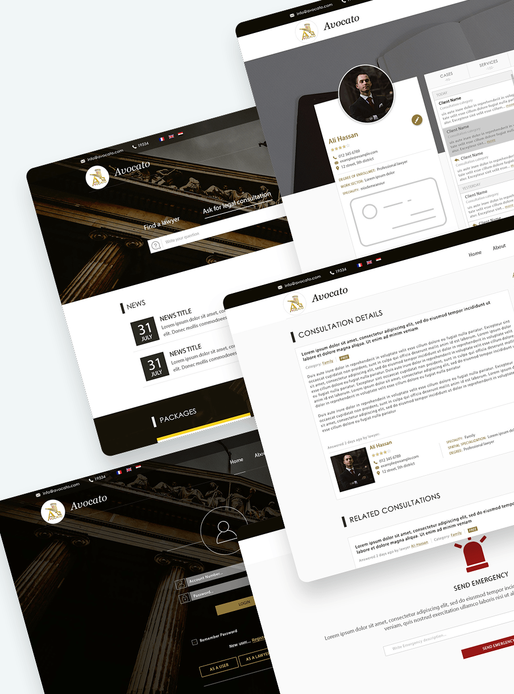
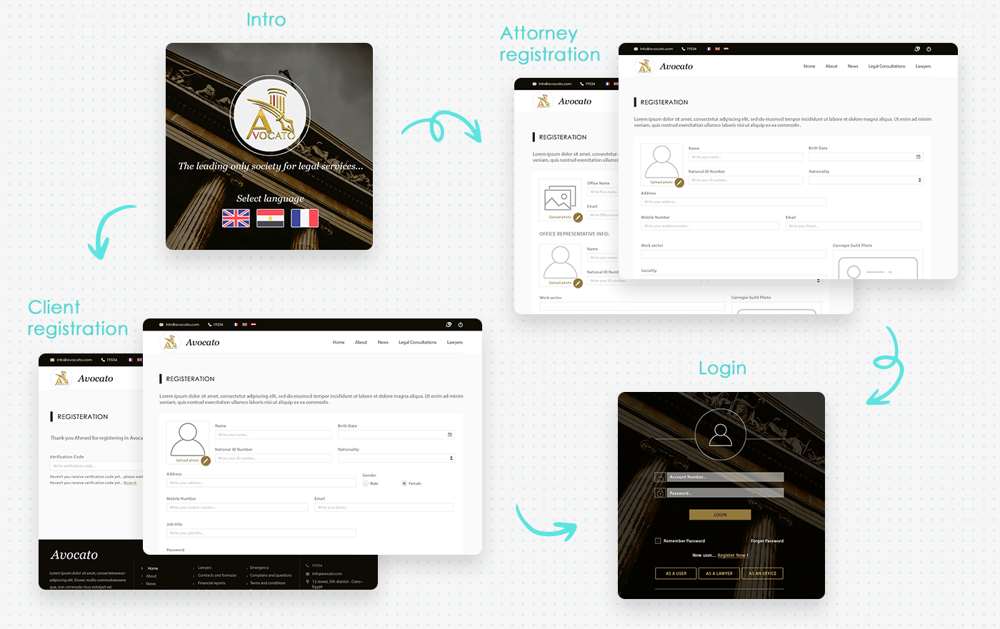
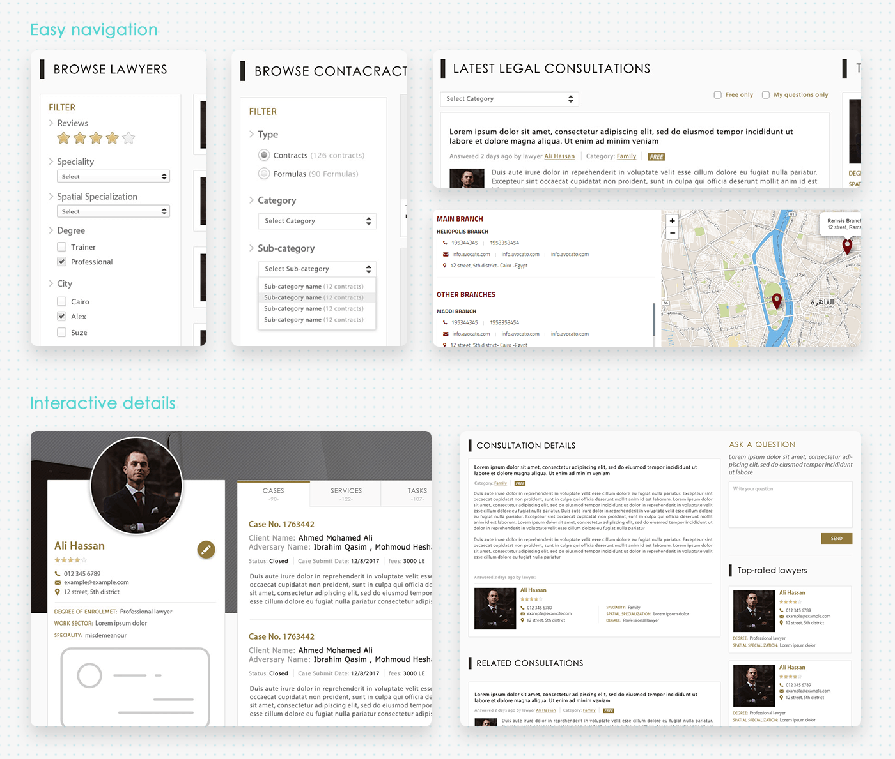

A platform that provides specialized legal services that facilitate dealing with legal issues for everyone.
Avocato delivers specialized legal service through an electronic platform, ensuring quality and accuracy before it reaches the client. That helps develop the lawyers' community and introduces qualified lawyers to clients.
Using Avocato is the future of legal services — enlarging, enriching and modernizing the attorney profession instead of the traditional way.

All legal consultations with their verified answers in one place, quick and easy to navigate when needed.
Live location helps users find the right lawyer's availability, while lawyers stay updated with their schedule.
Simple, easy-to-use interfaces so both lawyers and users can navigate the platform without hassle.
A trusted channel between users and lawyers to provide paperwork, saving time and effort.
Collaborated with the product owners to understand the target audience — lawyers and clients — ensuring the design resonated with their backgrounds and needs.
Identified the challenge: crafting a usable, highly functional web app for busy professionals, with an interface that fulfills emergency usage and builds trust between lawyers and clients for a professional relationship.
Studied successful apps like lawyers.com to understand how they build trust, analyzing the strengths and weaknesses of their layouts. Applied those insights to design a distinctive portal that reflected the client request.
Designed mockups, UI designs and interactive prototypes for the dev team, and delivered prototypes for usability testing to gather feedback and improve the UI.
Tested the product with the quality control team and real users, and did the final review before launch.
Founder and CEO of an international trade company that usually imports children's toys from China to distribute to local stores. He needs lawyer assistance multiple times during his process.
Quick search to a legal consultation in multiple settings to help facilitate his trade process.
Difficulty maintaining regular communication with his lawyer for follow-ups and updates.
Works at a private attorney office with a busy schedule, managing about 5–9 clients daily. He struggles with fragmented client paperwork spread across locations, leading to time-consuming searches during consultations.
A welcome screen with the tagline and a language select: English, Arabic and French.
Profile photo, personal details, then a verification code step.
Personal and office representative info, work sector, speciality and guild photo.
Account number and password, with entry paths as a user, a lawyer or an office.

Filter lawyers by reviews, speciality, spatial specialization, degree and city. Contracts and formulas filter by type, category and sub-category.
Consultations filter by category, free only, or my questions only. Branches show on a map with contact details.
Rating, contact, degree of enrollment, work sector and speciality, plus tabs for cases, services, tasks, clients and consultations.
The full answer from a lawyer, related consultations, an ask-a-question box and top-rated lawyers.

Each step replaced a scramble with a clear path.
Fragmented paperwork became one workspace.